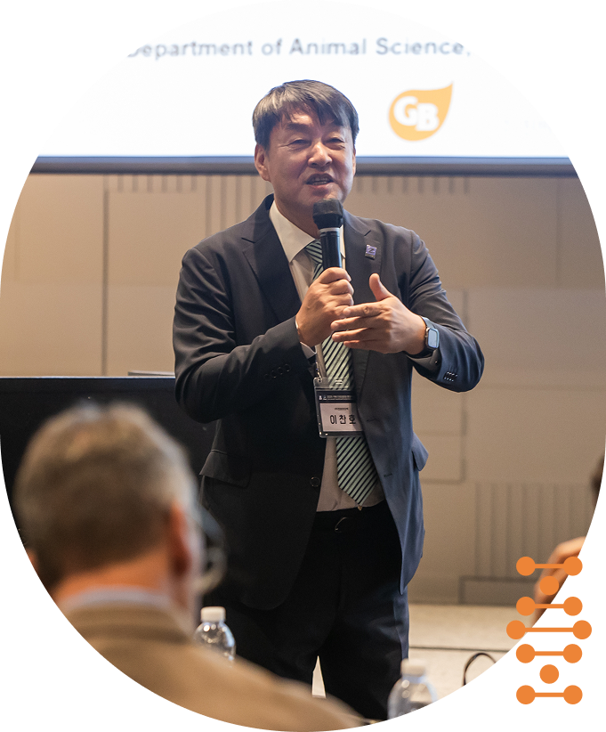

Welcome to Genebiotech
Since our founding in 2000, we have dedicated ourselves to crafting nature-inspired biotech solutions using advanced solid-state fermentation. What began as a venture rooted in Korean innovation has grown into a global enterprise producing PepSoyGen, Natufermen probiotics, Lactocare fruit fermentates and more—connecting traditional microbial wisdom with modern needs.
Our growth is anchored in a singular vision: to transform feed, food, and pharmaceuticals through sustainable fermentation technology. With each product—whether a fermentation-derived soy peptide or an eco-friendly direct-fed microbe—we pursue better digestion, enhanced nutrient absorption and safer livestock practices. Our research teams relentlessly pursue breakthroughs in environmental-friendly gene selection and scalable production methods.
At Genebiotech, innovation is not an endpoint but a journey—one guided by creation, sharing, and responsibility. We collaborate with international partners and export to markets across the globe seeking to harmonize agricultural progress with ecological stewardship.
Together with our dedicated team, I promise to uphold these values and to push the boundaries of microbiological innovation. Our goal is not only to lead the feed and functional ingredient market but also to improve global animal and human health—naturally and responsibly. Thank you for joining us in this venture toward a healthier, more sustainable future.
